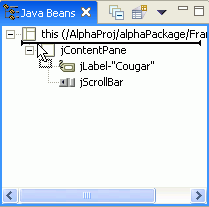

The Java Beans view displays components in the order in which they are added to their parent. You can use the Java Beans view to change this order.
When the source is parsed, the order that displays in the Java Beans view is determined by the order of the methods that create the relationship, such as add(Component,Object).
Tip: Depending
on the layout manager being used, you can reorder most components on the Design
view by dragging and dropping them. Your changes will be reflected in the
Java Beans view.
To use the Java Beans view to reorder children components:
- Release the mouse in the new position where you want the component
to be placed: Use the feedback lines to determine proper placement:
- As you drag the component, feedback is drawn as a line that shows the
position of where the bean will be moved. The following figure shows a label
that has been selected and dragged below the scroll bar. The left edge of
the feedback shows that the label is added at the same depth as the scroll
bar and the label. So, it will remain a child component of the contents pane.

- As the mouse is moved around, the left edge of the feedback line will
always be drawn at the depth level in the tree where the item will be inserted.
The following figure shows that the left edge of the feedback line is level
with the frame itself, and if the drag operation is completed the label will
become a top level Java bean similar to the frame itself.

- As you drag the component, feedback is drawn as a line that shows the
position of where the bean will be moved. The following figure shows a label
that has been selected and dragged below the scroll bar. The left edge of
the feedback shows that the label is added at the same depth as the scroll
bar and the label. So, it will remain a child component of the contents pane.